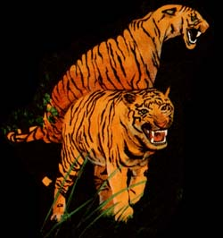
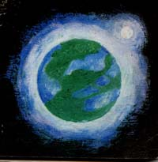
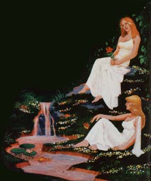

This is a first. As we go into MOTHER`s ninth year of publication we are, for the first (and, perhaps, the last) time, printing a work of fiction in this magazine's pages.
But not just any ole work of fiction. And not something that we wanted to bring to you because it's the "latest, hottest " piece by the most "super-In Author of the day.
No. The short story which follows is one we've been thinking of running in MOTHER for at. least five or six years... one that we first read at least 15 or 20 years ago .. one that was originally copyrighted "a long time ago" in 1951.
Now 1951 is a "fur piece" back- almost ancient history-when measured up against today's environmental and eco ogy movement (which really began to flex its muscles only in the very late 1960's). And that means that Ray Bradbury (author of the following story) exhibited a great deal of vision and foresight and was very definitely ahead of his time when he wrote Here There Be Tygers 27 or 28 years ago.
Because this story-as entertaining as it may be on the surface-is far, far more than a merely diverting and enjoyable tale. It is, in the truest sense, an allegory (allegory: a story in which people, things, and happenings have another meaning, as in a fable or parable) ... and a multileveled allegory, at that.
Read this little piece carefully and-if you're ready for it-you 71 begin to realize just what this beautiful planet (not "planet 7 of star system 84 ") is anxious to do for us if we'd only relax and let it... and what the true possibilities of life really are... and why man- and womankind seem so blindly intent on throwing themselves (and every other living creature) out. of the Garden of Eden as rapidly and as violently as possible.
A pox on O'Neill and his space colonies. We already live in (and daily ravage) magical, wondrous Elysian fields. Ray Bradbury knew that a long time ago. Most of us don't know it yet.
"You have to beat a planet at its own game, said Chatterton. "Get in and rip it up, kill its snakes, poison its animals, dam its rivers, sow its fields, depollinate its air, mint-It, nail it down, hack away at it. and get the blazes out from tinder when you have what you want. Otherwise. a planet will fix you good. You can't trust planets. They're bound to be different, bound to be bad, bound to be out to get you, especially this far out, a billion miles from nowhere, so you get them first. Tear their skin off, I may. Drag out the minerals and run away before the nightmare world explodes in your face.That's the way to treat them."
The rocket ship sank down toward planet 7 of star system 84. They had traveled millions upon millions of miles; Earth was far away, her system and her sun forgotten, her system settled and investigated and profited on, and other systems rummaged through and milked and tidied tip, and now the rockets of these tiny men from an Impossibly remote planet were probing out to far universes. In a few months, a few years, they could travel anywhere, for the speed of their rocket was the speed of a god, and new for the ten-thousandth time one of the rockets of the far-circling hunt was feathering down toward an alien world.
"No," said Captain Forester. "I have too much respect for other worlds to treat them the way you want to, Chatterton. It's not my business to rape or ruin anyway, thank God. I'm glad I'm just a rocket man. You're the anthropologist-mineralogist. Go ahead, do your mining and ripping and scraping. I'll just watch. I'll just go around looking at this new world, whatever it is, however it seems. I like to look. All rocket men are lookers or they wouldn't be rocket men Von like to smell new airs, if you're a rocket man, and see new oceans and islands."
"Take your gun along," said Chatterton. "in my bolster," said Forester.
They turned to the port together and saw the green world rising to meet their ship. "I wonder what it thinks of us?" said Forester.
"It won't like me" said Chatterton "I'll see to it It won't like me. And I don't care. you know, I'm out for the money. Land its over there, will you. Captain; that looks like rich country if I ever saw IV,
It was the freshest green color they had seen since childhood.
Lakes lay like clear blue water droplets through the soft hills; there were no loud highways, signboards or cities. It's a sea (if green golf links, thought Forester, which goes on forever. Putting greens, driving greens, you could walk ton thousand miles in any direction and never finish your game. A Sunday planet a croquet-lawn world, where, you could lie on your back, clover in your lips, eyes half shut, smiling at the sky, smelling the grass, drowse through an eternal Sabbath, rousing only on oc casion to turn the Sunday paper or crack the red-striped wooden bail through the wicket.
"It ever a planet was a woman, this one is "
"Woman on the outside, man on the inside," said Chatterton. "All hard underneath, all male iron, copper, uranium, black sod, Don't let the cosmetics fool you."
He walked to the bin where the Earth Drill waited. Its great screw-snout glittered bluely, ready to stab seventy feet deep and stick out corks of earth, deeper still with extensions into the heart of the planet Chatterton winked at it "We'll fix your planet,
Forester, but good "
"Yes, I know you will," said Forester, quietly,
The rocket landed.
"It's too green, too peaceful," said Chatterton. "I don't like it " He turned to the captain "We'll go out with our rifles "
"I give orders. if you don't mind "
"Yes, and my company pays our way with millions of dollars of machinery we must protect; quite an investment."
The air on the new planet 7 in star system 84 was good. The port swung wide The met; filed out Into the greenhouse world.
The last man to emerge was Chatterton, gun in hand
As Chatterton set foot to the green lawn, the earth trembled. The grass shook. The distant forest rumbled, The sky seemed to blink and darken imperceptibly, The men were watching Chatterton when it happened.
"An earthquake! "
Chatterton's face paled, Everyone laughed,
"It doesn't like you, Chatterton!
"Nonsensel"
The trembling died away at last.
"Well," said Captain Forester,"It didn't quake for us, so It must be that it doesn't approve of your philosophy."
"Coincidence," Chatterton smiled weakly, "Come on now, on the double, I want the Drill out here in a half hour for a few samplings,"
"Just a moment," Forester stopped laughing, "We've got to clear the area first, be certain there're no hostile people or animals, Besides, it isn't every year you hit a planet like this very nice; can you blame us if we want to have a look at it?"
"hit right," Chatterton joined them, "Let's get It over with,"
They left a guard at the ship and they walked away over fields and meadows, over small hills and into little valleys, Like a bunch of boys out hiking on the finest day of the best summer in the most beautiful year in history, walking in the croquet weather where, if you listened you could hear the whisper of the wooden ball across grass,
the click through the wicket, the gentle undulations of voices, a sudden high drift of women's laughter from some ivy shaded porch, the tinkle of ice in the summer tea pitcher,
"Hey," said Driscoll, one of the younger crewmen, sniffing the air, "I brought a baseball and bat; we'll have at game later, What a diamond! "
The men laughed quietly in the basebail season, in the good quiet wind for tennis, In the weather for bicycling and picking wild grapes.
"How'd you like the job of mowing all this?" asked Driscoll.
The men stopped.
"I knew there was something wrong!" cried Chatterton, "This grass: It's freshly cut!
"Probably a species of dichondra: always short."
Chatterton spat on the green grass and rubbed it in with his boot, "I don't like it, I don't like, it, If anything happened to its, no one on Earth would ever know, Silly policy: if a rocket fails to return, we never send a second rocket to check the reason why."
"Natural enough," explained Forester, "We can't waste time on a thousand hostile worlds, fighting futile wars, Each rocket represents years, money, lives, We can't afford to waste two rockets if one rocket proves a planet hostile, We go on to peaceful planets, Like this one."
"I often wonder," said Driscoll, "what happened to all those lost expeditions on worlds we'll never try again."
Chatterton eyed the distant forest, "They were shot, stabbed, broiled for dinner, Even as we may be, tiny minute, It's time we got back to work, Captain!
They stood at the top tot a little rise.
"Feel," said Driscoll, his hands and arms out loosely, "Remember how you used to run when you were it kid, and how the wind felt, Like feathers on your arms, You ran and thought any minute you'd fly, but you never quite did."
The men stood remembering, There was a smell of pollen and new rain drying upon a million grass blades.
Driscoll gave a little run," Feel it, by God, the wind, You know, we never have really flown by our selves, We have to sit inside tons of metal, away from flying, really, We've never flown like birds fly, to themselves, Wouldn't it be nice to, put your arms out like this - " He, extended his arms, "And run," He ran ahead of them, laughing out his Idiocy, "And fly!" he cried,
He flew.
Time passed on the silent gold wristwatches of the men standing below, They stared up, And from the sky came it high sound (of almost unbelievable laughter.
"Tell him to come down some gold risk pered Chatterton. 'He'll be killed."
Nobody heard. Their faces were raised away front Chatterton: they were stunned and smiling.
At last Driscoll landed at their feet.
Did you see me! "I flew"
They had seen.
Lets get down, oh, Lord. Lord." Driscoll slapped his knees, chuckling. ,'I'm a sparrow, Im a hawk, God bless me. Go on all of you, try it!
"It's the wind, it picked me up and flew me! " he said, a moment later. gasping, shivering with delight.
"Let's got out of here." Chatterton started turning, slowly in circles, watching the blue sky. "It's a trap, it wants us all to fly in the air. Then it'll drop its all at once and kill us. I'm going back to the ship."
"You'll wait for my order on that," said Forester,
The men were frowning. standing in the warmcool air, while the wind sighed about them. There was a kite sound in the air, a sound of eternal March.
"I asked the wind to fly me." said Driscoll. "And it did!"
Forester waved the others aside. "I'll chance it next. It I'm killed, back to the ship, all of you."
Im sorry. I can't allow this, you're the captain." said Chatterton. We can't risk" you." He took out his gun.
"I should have some sort of au thority or force here, This game's gone on too long; I'm ordering us back to the ship." "Holster your gun... said Forester, quietly " Standstill you idiot'
Chatterton blinked now at this man, now at that.
Haven't you felt it'! This world's alive, it hits a look to it,
It's playing with its biding Its time "I'll be the judge of that," said Forester" You're going back to the ship in a moment, under arrest, if you don't put up that gun."
"If You fools won't come with me, you can die out here. I'm going back get my samples, and get out."
"Chatterton!"
"Don't try to step me!"
Chatterton started to run. Then suddenly, he gave a cry.
Everyone shouted and looked up. There he goes," said Driscoll.
Chatterton was up in the sky.
Night had come on like the closing of a great but gentle eye. Chatterton sat stunned on the side of the hill. The other men sat around him, exhausted and' laughing. He would not look at them. he would not look at the -sky. he would only feet of the earth. and his arms and his legs and his body, tightening in on himself.
"Oh, wasn't it perfect!" said a man named Koestler.
They had all flown like orioles and eagles and sparrows, and they were all happy.
"Come out of it, Chatterton, it was fun, wasn't it?"' said Koestler.
"It's impossible." Chatterton shut his eyes, tight, tight. "There's only one way for it to do it; it's alive. The air's alive. Like a fist it picked me up . Any minute now, it can kill its all. It's alive."
"All right," said Koestler. "say it's alive. And it living thing must have purpose. Suppose the purpose of this world is to make us happy."
As if to add to this, Driscoll came flying up, canteens in each hand. "I found a creek. tested and found pure water, wait'll you try it!"
Forester took a canteen, nudged Chatterton with it, offering a drink. Chetterton shook his head and drew hastily away. He put his hands over his face. "It's the blood of this planet. Living blood. Drink that, put that inside and you put this world inside you to peer out your eyes and listen through your ears. No thanks! "
Forester shrugged and drank.
"Wine! " he said.
"It can't be!"
"it is! Smell it, taste it! A rare white wine!
"French domestic." Driscoll sipped his.
"Poison," said Chatterton.
They passed the canteens around.
They had idled on through the gentle afternoon, not wanting to do anything to disturb the peace that lay all about them. They were like very young men in the presence of great beauty, of a fine and famous woman, afraid that by some word, some gesture, they might turn her face away, avert her loveliness and her kindly attentions. They had felt the earthquake that had greeted Chatterton, and they did not want earthquake. Let them enjoy this Day After School Lets Out, this fishing weather. Let them sit under the shade trees or walk on the tender hills, but let them drill no drillings, test no testings, contaminate no contaminations.
They found a small stream which poured into a boiling water pool. Fish, swimming in the cold creek above, fell glittering into the hot spring and floated, minutes later, cooked, to the surface.
Chatterton reluctantly joined the others, eating.
" It'll poison us all. There's always a trick to things like this. I'm sleeping in the rocket tonight. You can sleep out if you want. To quote a map I saw in medieval history: 'Here there be tygers.' Some time tonight when you're sleeping, the tigers and cannibals will show up."
Forester shook his head. "I'll go along with you, this planet is alive. It's a race itself. But it needs us to show off to, to appreciate its beauty. What's the use of a stage full of miracles if there's no audience?"
But Chatterton was busy. He was bent over, being sick.
"I'm poisoned! Poisoned!"
They held his shoulders until the sickness passed. They gave him water. The others were feeling fine.
"Better eat nothing but ship's food from now on," advised Forester. "It'd be safer."
"We're starting work right now." Chatterton swayed, wiping his mouth. "We've wasted a whole day. I'll work alone if I have to. I'll show this infernal place! "
He staggered away toward the rocket.
"He doesn't know when he's well off," murmured Driscoll." Can't we stop him, Captain'? "
"He practically owns the expedition. We don't have to help him, there's a clause in our contract that guarantees refusal to work under dangerous conditions. So ... do unto this Picnic Ground as you would have it do unto you. No initial-cutting on the trees. Replace the turf on the greens. Clean up your banana peels after you."
Now, below, in the ship there was an immense humming. From the storage port rolled the great shining Drill. Chatterton followed it, calling directions to its robot radio. "This way, here!
You fool.
Now! " cried Chatterton.
The Drill plunged its long screw-bore into the green grass. Chatterton waved up at the other men. "Watch this!
The sky trembled.
The Drill stood in the center of a little sea of grass. For a moment it plunged away, bringing up moist corks of sod which it spat unceremoniously into a shaking analysis bin.
Now the Drill gave a wrenched, metallic squeal like a monster interrupted at its feed. From the soil beneath it slow bluish liquids bubbled up.
Chatterton shouted, "Get back, you fool! "
The Drill lumbered in a prehistoric dance. It shrieked like a mighty train turning on a sharp curve, throwing out red sparks. It was sinking. The black slime gave under it in a dark convulsion.
With a coughing sigh, a series of pants and churnings, the Drill sank into a black scum like an elephant shot and (lying, trumpeting, like a mammoth at the end of an Age, vanishing limb by ponderous limb into the pit.
"Fool, Fool," said Forester under his breath, fascinated with the scene. "You know what that is, Driscoll? It's tar. The fool machine hit a tar pit! "
"Listen, listen!" cried Chatterton at the Drill, running about on the edge of the oily lake. " This way, over here! "
But like the old tyrants of the earth, the dinosaurs with their tubed and screaming necks, the Drill was plunging and thrashing in the one lake from where there was no returning to bask on the firm and understandable shore.
Chatterton turned to the other men far away. "Do something, someone!"
The Drill was gone.
The tar pit bubbled and gloated, sucking the hidden monster bones. The surface of the pool was silent. A huge bubble, the last, rose, expelled a scent of ancient petroleum, and fell apart.
The men came down and stood on the edge of the little black sea.
Chatterton stopped yelling.
After a long minute of staring into the silent tar pool, Chatterton turned and looked at the hills, blindly, at the green rolling lawns. The distant trees were growing fruit now and dropping it, softly, to the ground.
"I'll show it," he said quietly.
"Take it easy, Chatterton."
"I'll fix it," he said.
"Sit down, have a drink."
"I'll fix it good, I'll show it, it can't do this to me."
Chatterton started off back to the ship.
"Wait a minute now," said Forester.
Chatterton ran. "I know what to do, I know how to fix it! "
"Stop him!" said Forester. He ran, then remembered he could fly. "The A-Bomb's on the ship, if he should get to that. . . "
The other men had thought of that and were in the air. A small grove of trees stood between the rocket and Chatterton as he ran on the ground, forgetting that he could fly, or afraid to fly, or not allowed to fly, yelling. The crew headed for the rocket to wait for him, the captain with them. They arrived, formed a line, and shut the rocket port. The last they saw of Chatterton he was plunging through the edge of the tiny forest.
The crew stood waiting.
... That fool, that crazy guy."
Chatterton didn't come out on the other side of the small woodland.
"He's turned back, waiting for us to relax our guard."
"Go bring him in," said Forester.
Two men flew off.
Now, softly, a great and gentle rain fell upon the green world.
"The final touch," said Driscoll. "We'd never have to build houses here. Notice it's not raining on us. It's raining all around, ahead, behind us. What a world! "
They stood dry in the middle of the blue, cool rain. The sun was setting. The moon, a large one the color of ice, rose over the freshened hills.
"There's only one more thing this world needs."
"Yes," said everyone, thoughtfully, slowly.
"We'll have to go looking," said Driscol l.
"It's logical, The wind flies its, the trees and streams feed us, everything is alive. Perhaps if we asked for companionship. . . "
"I've thought a long time, today and other days," said Koestler. "We're all bachelors, been traveling for years, and tired of it. Wouldn't it be nice to settle down somewhere! Here, maybe. On Earth you sweat just to save enough to buy a house, pay taxes; the cities stink. Here, you won't even need a house, with this weather. If it gets monotonous you can ask for rain, clouds, snow, changes. You don't have to work here for anything."
"It'd be boring. We'd go crazy."
"No," Koestler said, smiling. "if life got too soft, all we'd have to do is repeat a few times what Chatterton said: 'Here there be tygers.'Listen! "
Far away, wasn't there the faintest roar of a giant cat, hidden in the twilight forests?
The men shivered.
"A versatile world," said Koestler dryly. "A woman who'll do anything to please her guests, as long as we're kind to her. Chatterton wasn't kind."
"Chatterton. What about him?"
As if to answer this, someone cried from a distance. The two men who had flown off to find Chatterton were waving at the edge of the woods.
Forester, Driscoll, and Koestler flew down alone.
"What's up?"
The men pointed into the forest. "Thought you'd want to see this, Captain. It's eerie." One of the men indicated a pathway. "Look here, sir."
The marks of great claws stood on the path, fresh and clear.
"And over here." few drops of blood heavy smell of some feline animal hung in the air.
"Chatterton?"
"I don't think we'll ever find him, Captain."
Faintly, faintly, moving away, now gone in the breathing silence of twilight, came the roar of a tiger.
The men lay on the resilient grass by the rocket and the night was warm. "Reminds me of nights when I was a kid," said Driscoll. "My brother and I waited for the hottest night in July and then we slept on the Court House lawn, counting the stars, talking; it was a great night, the best night of my life." Then he added, "Not counting tonight, of course."
"I keep thinking about Chatterton," said Koestler.
"Don't," said Forester. "We'll sleep a few hours and take off. We can't chance staying here another day. I don't mean the danger that got Chatterton. No. I mean, if we stayed on we'd get to liking this world too much. We'd never want to leave."
A soft wind blew over them.
"I don't want to leave now." Driscoll put his hands behind his head, lying quietly. "And it doesn't want us to leave."
"If we go back to Earth and tell everyone what a lovely planet it is, what then, Captain'.' They'll come smashing in here and ruin it."
"No," said Forester idly. "First, this planet wouldn't put up with a full-scale invasion. I don't know what it'd do, but it could probably think of some interesting things. Secondly, I like this planet too much; I respect it. We'll go back to Earth and lie about it. Say it's hostile. Which it would be to the average man. like Chatterton, jumping in here to hurt it. I guess we won't be lying after all.
"Funny thing," said Koestler. "I'm not afraid. Chatterton vanishes, is killed most horribly, perhaps, yet we lie here, no one runs, no one trembles. It's Idiotic. Yet it's right. We trust it and it trusts us."
"Did you notice, after you drank just so much of the wine-water. you didn't want more? A world of moderation."
They lay listening to something like the great heart of this earth beating slowly and warmly under their bodies.
Forester thought, I'm thirsty.
A drop of rain splashed on his lips.
He laughed quietly.
I'm lonely, he thought.
Distantly he heard soft, high voices.
He turned his eyes in upon a vision. There was a group of hills from which flowed a clear river, and in the shallows of that river, sending tip spray, their faces shimmering, were the beautiful women. They played like children on the shore. And it came to) Forester to know about them and their life. They were nomads. roaming the face of this world as was their desire. There were no highways or cities, there were only hills and plains and winds to carry them like white feathers where they wished. As Forester shaped the questions, some invisible answerer whispered the answers. There were no men. These women, alone, produced their race. The men had vanished fifty thousand years ago. And where were these women now? A mile down from the green forest a, mile over on the wine stream by the six white stones, and a third mile to the large river. There. in the shallows. were the women who would make fine wives. and raise beautiful children.
Forester opened his eyes. The (other men were sitting up.
"I had a dream"
They bad all dreamed
"A mile flown from the green forest a mile over on the wine stream . . . "
. . . by the six white stones" said Koestler.
. . . and a third mile to the large river,"said Driscoll, sitting there.
Nobody spoke again for at moment. They looked at the silver rocket standing there in the starlight,.
"Do we walk for fly, Captain?"
Forester said nothing.
Driscoll said, "Captain. let's stay. Let's never go back to Earth. They'll never come and investigate to see what happened to us; they'll think we were destroyed here. What do you say?"
Forester's face was perspiring. His tongue moved again and again on his lips. His hands twitched over his knees. The crew sat waiting.
"It'd be nice." said the captain.
"Sure."
"But . . . " Forester sighed. "We've got our job to do. People invested in our ship. We owe it to them to go back."
Forester got up. The men still sat on the ground, not listening to him.
"It's such a fine, nice, wonderful night," said Koestler.
They stared at the soft hills and the trees and the rivers running off to other horizons.
"Let's get aboard ship," said Forester, with difficulty.
"Captain ...
"Get aboard," he said.
The rocket rose into the sky. Looking back, Forester saw every valley and every tiny lake.
"We should've stayed." said Koestler.
"Yes, I know."
"It's not too late, to turn back."
"I'm afraid It is." Forester made an adjustment on the port telescope. "Look now."
Koestler looked.
The face of the world was changed Tiger, dinosaurs, mammoths appeared. Volcanoes erupted cyclones and hurricanes tore over the hills in a welter and fury of weather.
"Yes, she was a woman all right," said Forester. "Waiting for visitors for millions of years, preparing herself, making herself beautiful. She put on her best face for us. When Chatterton treated her badly, she warned him a few times, and then, when he tried to ruin her beauty, eliminated him. She wanted to be loved, like every woman, for herself, not for her wealth. So now, after she had offered us everything, we turn our backs. She's the woman scorned. She let us go, yes, but we can never come back. She'll be wait ing for us with those He nodded to the tigers and the cyclones and the boiling seas.
"Captain," said Koestler
"Yes."
"It's a little late to tell you this. But just before we took off, I was in charge of the air lock. I let Driscoll slip away from the ship. He wanted to go. I couldn't refuse him. I'm responsible. He's back there now, on that planet."
They both turned to the viewing port.
After a long while, Forester said. "I'm glad. I'm glad one of us had enough sense to stay."
"But he's dead by now!
"No, that display down there is for us, perhaps a visual hallucination. Under all the tigers and lions and hurricanes, Driscoll Is quite safe and alive, because he's her only audience now. Oh, she'll spoil him rotten. He'll lead a wonderful life. he will, while we're slugging it out up and down the system looking for but never finding a planet quite like this again. No. we won't try to go back and rescue Driscoll I don't think 'she' would lot us anyway. Full speed ahead, Koestler, make it full speed."
The rocket leaped forward Into greater accelerations.
And just before the planet dwindled away in brightness and mist, Forester imagined that he could see Driscoll very clearly, walking away down from the green forest, whistling quietly, all of the fresh planet around him, a wine creek flowing for him, baked fish lolling in the hot springs. fruit ripening in the midnight trees, and distant forests and lakes waiting for him to happen by. Driscoll walked away across the endless green lawns near the white stones, beyond the forest, to the edge of the large bright river ....
|
 |
 |
 |